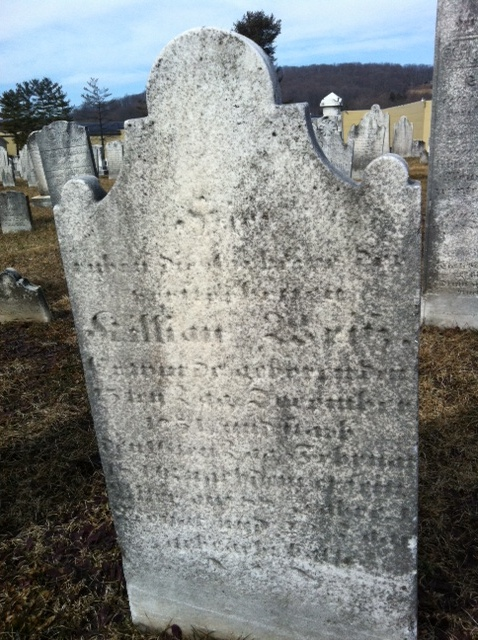
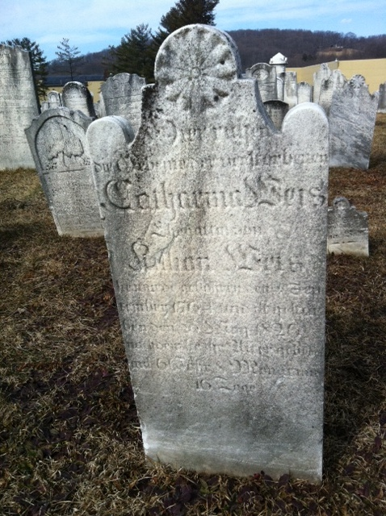

Killian and Catharina WEIS
3X GREAT-GRANDPARENTS of Titus HARTMAN (MxMxPxP)
married 02 Nov 1784
Killian WEIS Sr.
born 15 Dec 1751
died 16 Feb 1840
Catharina Ziegler LANDIS
born 04 Sep 1764
died 20 May 1826
Children of Killian WEIS Sr. and Catharina LANDIS
Ann Maria WEIS
born 28 Jul 1786
died 10 Dec 1810
Killian Landis WEIS
born born 26 Jan 1788
died 23 Dec 1874
John Landis WEIS
born 03 Sep 1790
died 28 Aug 1856
Jacob Landis WEIS
born 20 Feb 1793
died 08 May 1863
George Landis WEIS
born 04 Sep 1795
died 10 Jul 1859
Samuel Landis WEIS
born 01 Jan 1798
died 21 Mar 1876
Catherine Landis WEIS
born 12 Aug 1800
died 09 Apr 1883
Hannah Landis WEIS
born 04 Jun 1806
died 22 Mar 1882
Henry Landis WEIS
born 14 Apr 1808
died 24 Sep 1878
Killian and Catharina are buried together in Bally Mennonite Cemetery in Bally, PA.

